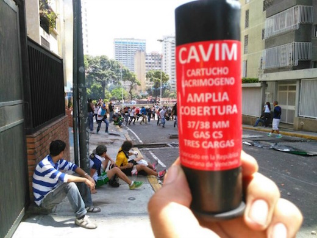
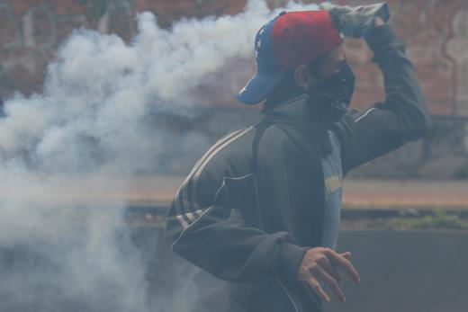

What started as a peaceful protest in Caracas was met with a shocking, shocking amount of tear gas today.
Some of it red.
Most large cities saw protest... And the situation remains tense
Represion has been nothing if not heavy handed
Saturdays protests were marked by even harder repression from State forces than we are used to. While media attention focuses mainly on Caracas, many parts Venezuela saw some serious action. Protest in el interior were not that big, but they were passionate and often strongly repressed by the security forces. Here is a roundup of the situation.